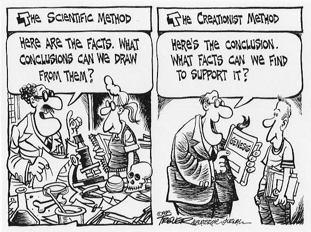

Affirmation CA230.1 :
Les conclusions des scientifiques sont basées sur leurs préjugés. Ils ne prouvent que ce qu'ils supposent.Source :
Oard, Michael J. 2003. Les feuilles de glace polaires ne sont-elles âgées que de 4500 ans ?
Impact 361 (juillet), p. iv.
http://www.icr.org/index.php?module=articles&action=view&ID=120
Réponse :
- Les conclusions des scientifiques sont basées sur des preuves, et les preuves
restent pour tous à voir. Les scientifiques savent que leurs idées doivent
résister à l'examen d'autres scientifiques, qui peuvent ne pas partager leurs
préjugés. La meilleure façon de faire cela est de rendre le cas assez solide
sur la base des preuves pour que les préjugés n'importent pas. Et les scientifiques
condamnent eux-mêmes les préjugés lorsqu'ils les voient. (Stephen J. Gould, le plus
virulent récent défenseur contre les préjugés en science, était farouchement
anticréationniste.)
L'histoire des sciences est remplie de scientifiques acceptant des idées contraires à leurs préjugés. Des exemples incluent la réalité des extinctions, la réalité des météores, les météores comme causes d'extinctions massives, les âges glaciaires, la dérive des continents, les transposons, les bactéries comme cause des ulcères, la nature des prions, et, bien sûr, l' évolution elle-même. Les scientifiques ne sont pas à l'abri d'être détournés par leurs préjugés, mais ils finissent par aller là où les preuves les mènent.
Les scientifiques font des efforts délibérés pour éliminer les influences subjectives de leur évaluation des conclusions ; ils font un bon travail, dans l'ensemble, à réduire les biais. Ils font un tel bon travail, en fait, que ce que les créationnistes critiquent vraiment, c'est le fait que les scientifiques n'interprètent pas les preuves selon certains préjugés religieux. - L'hypocrisie de cette accusation ne peut être surestimée. Les créationnistes affirment ouvertement qu'ils n'acceptent que ce qu'ils supposent déjà. Considérez une partie de la Déclaration de foi d'Answers in Genesis : « Par définition, aucune preuve apparente, perçue ou revendiquée dans aucun domaine, y compris l'histoire et la chronologie, ne peut être valide si elle contredit l'enregistrement scripturaire » (AIG n.d.). L'Institute for Creation Research a une déclaration de foi similaire (ICR 2000). Les créationnistes admettent d'emblée que leurs préjugés, sous la forme de convictions religieuses, déterminent leurs conclusions.
Références :
- AIG. n.d. Déclaration de foi. http://www.answersingenesis.org/home/area/about/faith.asp
- ICR. 2000. Dix principes du créationnisme. http://www.icr.org/index.php?module=research&action=index&page=research_tenets
Pour approfondir :
Trever, John. Bande dessinée sans titre.
Copyright 1998 John Trever, Albuquerque Journal. Utilisé avec permission.
créé 2003-6-30, modifié 2004-5-6